*RegionSetDE*: from peak calls to differential binding
Sebastian Gregoricchio, Ph.D.
Netherlands Cancer Institute, Oncogenomics division, Amsterdam - Netherlandss.gregoricchio@nki.nl
Last update: 06th October, 2026
Source:vignettes/RegionSetDE.peaks.vignette.Rmd
RegionSetDE.peaks.vignette.RmdIntroduction
The main vignette starts from regions you already have and asks whether the signal over them changes. This one starts a step earlier, from the output of a peak caller, and covers the path that DiffBind users will recognise: a sample sheet, a consensus of the peak calls, a count matrix over that consensus, and a differential test.
The two differ in what they take as given. When the regions come from an annotation, they are the same in every sample and the question is only about signal. When they come from peak calls, the regions themselves carry information: a site called in one condition and not in the other is a fact about the experiment, and it is worth keeping next to the statistics rather than discarding it once the consensus is built. Everything below keeps track of which samples and which groups called a peak on each region, and the occupancy stays attached through the counting, the fit and the results table.
The example dataset
Androgen receptor (AR) ChIP-seq in LNCaP prostate cancer cells, from
GSE284522
(Eickhoff et
al., Communications Biology 8, 1043,
2025). The cells were hormone deprived and then treated with DMSO,
or with the synthetic androgen R1881 for four or twenty-four hours,
three biological replicates each, with one input library. Peaks were
called with MACS2 in BAMPE mode through SPACCa, on
GRCh38.
AR sits in the cytoplasm until it binds a ligand, so this is an experiment where the number of bound sites goes up several fold rather than shifting between locations. That makes it a good illustration and a good trap, for reasons the normalisation section gets to.
The alignments shipped here are a slice: a window of chromosome 19,
subsampled to 12 % of the read pairs, with the sequences, the qualities
and the read names removed. Counting needs the position and the CIGAR
and nothing else, so the counts are the real ones scaled by a known
factor and every ratio is preserved. The peaks, on the other hand, are
the calls of the complete libraries, filtered to the same window, so
they carry the depth the caller actually had.
system.file("extdata", "lncapAR", "SOURCES.md", package = "RegionSetDE")
records exactly what was done, and
inst/scripts/make-example-bams.sh holds the commands.
The sample sheet
Everything starts from a table with one row per library.
loadSampleSheet() reads it, recognises the columns whatever
they are called, and turns the relative paths into absolute ones,
resolved against the folder of the sheet.
sampleSheet <- loadExampleData("peakSheet")
sampleSheet %>%
dplyr::select(sample, condition, treatment, time, replicate)
> sample condition treatment time replicate
> 1 AR_DMSO_r1 DMSO DMSO 4h r1
> 2 AR_DMSO_r2 DMSO DMSO 4h r2
> 3 AR_DMSO_r3 DMSO DMSO 4h r3
> 4 AR_R1881_4h_r1 R1881_4h R1881 4h r1
> 5 AR_R1881_4h_r2 R1881_4h R1881 4h r2
> 6 AR_R1881_4h_r3 R1881_4h R1881 4h r3
> 7 AR_R1881_24h_r1 R1881_24h R1881 24h r1
> 8 AR_R1881_24h_r2 R1881_24h R1881 24h r2
> 9 AR_R1881_24h_r3 R1881_24h R1881 24h r3The sample, bam, peaks and
input columns are the ones the package looks for. Names
used by DiffBind are understood as well, so a sheet written for
it can be read without editing: bamReads is taken as
bam and bamControl as input.
Anything else in the table is metadata, kept as it is and available
later to the design formula and to the annotations of the plots.
colnames(sampleSheet)
> [1] "sample" "bam" "peaks" "input" "input.id" "condition"
> [7] "treatment" "time" "replicate"A sheet carrying only peaks is enough to build a consensus. The BAM files are needed from the counting onwards, and every one of them must be indexed; a BAI or a CSI index both work.
Paired-end, single-end, or both
Nothing has to be declared about the layout.
countReads() takes pairedEnd = "auto" by
default and reads the flags of the first records of every file, so each
library is counted the way it was sequenced. A paired-end fragment is
rebuilt from the first mate of each proper pair and counts once; a
single-end read is extended to the fragment length of its library, 150
bp unless said otherwise, and counts once as well.
Libraries of both kinds can therefore sit in the same analysis. Each
one ends up with one count per sequenced fragment, which is the scale
the model needs, and the layout the counting settled on is stored in the
paired.end column of the sample table so that it can be
checked afterwards. The two mistakes this avoids are worth knowing,
because they fail in opposite directions: a paired-end file forced
through the single-end path counts each mate on its own and almost
doubles its values, while a single-end file forced through the
paired-end path finds no pair and returns a column of zeros. A test of
the package counts one of the libraries below next to a single-end copy
of itself, and the two agree to within one per cent.
Fragment length of single-end libraries
A single-end read tells where a fragment starts and not how long it
is, so the counting has to be told how far to extend it. A single value
for every library is rarely right: fragment sizes change with the
sonication and the size selection of each library, and a read extended
too far spills into the neighbouring regions while one extended too
little misses the centre of its own. fragmentLength
therefore takes one value per sample, in three ways: a vector, a column
of the sample sheet, or "auto".
A pipeline that already estimated the fragment length, with phantompeakqualtools for instance, can write it in the sheet, and the column is then named in the counting:
# A 'fragmentLength' column in the sheet, one value per library
counts <- countReads(consensus,
sampleSheet = sampleSheet,
fragmentLength = "fragmentLength")"auto" estimates it from the reads with
estimateFragmentLength(), which can also be run on its own
to look at what it finds. Every fragment leaves a read on the forward
strand at its left end and one on the reverse strand at its right end,
so the distance between the ends of forward and reverse reads piles up
at the fragment length. The libraries here are paired-end and need none
of this, but read as single-end, each mate on its own, they show what
the estimate does and can be checked against the insert sizes the pairs
give directly:
fragmentEstimate <- estimateFragmentLength(sampleSheet = sampleSheet,
pairedEnd = FALSE,
verbose = FALSE)
insertSizes <- estimateFragmentLength(sampleSheet = sampleSheet,
verbose = FALSE)
data.frame(sample = fragmentEstimate$table$sample,
crossCorrelation = fragmentEstimate$table$fragment.length,
insertSize = insertSizes$table$fragment.length)
> sample crossCorrelation insertSize
> 1 AR_DMSO_r1 155 189
> 2 AR_DMSO_r2 159 207
> 3 AR_DMSO_r3 180 207
> 4 AR_R1881_4h_r1 196 200
> 5 AR_R1881_4h_r2 198 203
> 6 AR_R1881_4h_r3 169 206
> 7 AR_R1881_24h_r1 194 195
> 8 AR_R1881_24h_r2 196 202
> 9 AR_R1881_24h_r3 183 198
fragmentEstimate$plot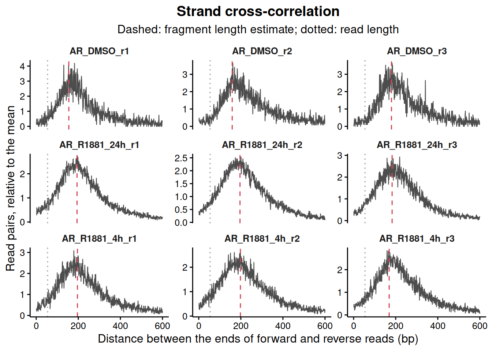
Five of the six treated libraries land within 15 bp of their median
insert size. The DMSO ones come out 27 to 48 bp shorter, and the plot
says why: with thirteen peaks in the window there are few fragments
piled anywhere, and the cross-correlation is mostly background. The
estimate needs enrichment to work on, which is why "auto"
in countReads() reads the regions being counted rather than
the whole genome. A second, narrow peak sits at the read length on most
libraries; it comes from the parts of the genome where reads cannot be
mapped on either strand, and the search starts past it.
The lengths used end up in the fragment.length column of
the sample table, NA for the paired-end samples, and
countBackground() and countGreenlist() reuse
them sample by sample.
Artefact regions
Some stretches of the genome collect reads in every experiment whatever the antibody: satellites, collapsed repeats, the ends of chromosomes, regions whose copy number the cell line has multiplied. A peak called there is real in the sense that the reads are there, and meaningless in every other sense. Two kinds of list take them out.
Blacklist
A blacklist is a fixed list per assembly, the same for every experiment. The ENCODE lists for the common assemblies are installed with the package, together with the exclusion set of T2T-CHM13 and the CUT&RUN and CUT&Tag lists of de Mello et al., so no download and no hub are needed.
availableRegionLists(genome = "hg38")
> type genome assay source version n.regions covered.bp
> 1 blacklist hg38 any ENCODE v2 636 227162400
> 2 blacklist hg38 cutrun deMello v1 832 10133493
> 3 blacklist hg38 cuttag deMello v1 2020 9183890
> 4 greenlist hg38 cutrun deMello v1 869 1725126
> 5 greenlist hg38 cuttag deMello v1 2767 3811775
> reference
> 1 Amemiya, Kundaje and Boyle (2019) Sci Rep 9:9354
> 2 de Mello et al. (2024) Brief Bioinform 25:bbad538
> 3 de Mello et al. (2024) Brief Bioinform 25:bbad538
> 4 de Mello et al. (2024) Brief Bioinform 25:bbad538
> 5 de Mello et al. (2024) Brief Bioinform 25:bbad538blacklist <- loadBlacklist("hg38", seqlevelsStyle = "Ensembl")
blacklist
> GRanges object with 636 ranges and 1 metadata column:
> seqnames ranges strand | name
> <Rle> <IRanges> <Rle> | <character>
> [1] 10 1-45700 * | Low Mappability
> [2] 10 38481301-38596500 * | High Signal Region
> [3] 10 38782601-38967900 * | High Signal Region
> [4] 10 39901301-41712900 * | High Signal Region
> [5] 10 41838901-42107300 * | High Signal Region
> ... ... ... ... . ...
> [632] Y 4343801-4345800 * | High Signal Region
> [633] Y 10246201-11041200 * | High Signal Region
> [634] Y 11072101-11335300 * | High Signal Region
> [635] Y 11486601-11757800 * | High Signal Region
> [636] Y 26637301-57227400 * | High Signal Region
> -------
> seqinfo: 24 sequences from hg38 genome; no seqlengthsseqlevelsStyle = "Ensembl" names the chromosomes the way
the peaks and the alignments do. The package would reconcile the two
styles on its own when the list is applied, but loading it in the right
style from the start keeps what you look at identical to what gets
used.
Greylist
A greylist is specific to one experiment. It comes from the input
library, and flags the places where the input carries far more fragments
than the rest of its own genome leads to expect: amplifications of the
cell line, repeats the assembly collapsed, regions that stick to any
immunoprecipitation. Those are artefacts of this sample rather than of
the assembly, so no fixed list catches them. makeGreylist()
follows GreyListChIP, the procedure DiffBind uses: the genome
is cut into overlapping windows, a negative binomial is fitted to the
counts of the input, and the windows above its 99th percentile are
flagged and merged.
greylist <- makeGreylist(sampleSheet)
S4Vectors::metadata(greylist)$thresholds
> input
> 1 input
> file
> 1 /tmp/RtmpJUMvbz/temp_libpath3c29392d4a9d88/RegionSetDE/extdata/lncapAR/input.bam
> fragments mean size threshold windows flagged.windows regions
> 1 5353 0.09351198 0.1836287 2 114488 362 161
> greylisted.bp
> 1 1054720This is where the example earns its place. The input shipped here is
a subsampled slice, about five thousand fragments spread over 12 Mb, so
a 1 kb window holds 0.09 fragments on average and the threshold the fit
arrives at is 2. Any window with two fragments is
flagged, and about 9 % of the region is thrown out, including several
genuine AR sites. The greylist is estimated from the depth of the input,
and an input this shallow has no depth to estimate it from. The
thresholds table is the place to catch it, and the fix is a
window wide enough to hold a few fragments each.
greylist <- makeGreylist(sampleSheet, binSize = 10000)
S4Vectors::metadata(greylist)$thresholds %>%
dplyr::select(input, fragments, mean, threshold, regions, greylisted.bp)
> input fragments mean threshold regions greylisted.bp
> 1 input 5353 0.9131696 15 2 25000On a complete input library the default windows are the right choice. What transfers from this example is the habit: look at the threshold before trusting the list.
Taking them out
The two lists go in separately, before the consensus is built,
through the blacklist and greylist arguments
of loadConsensusPeaks() below. Removing the peaks first is
better than removing the consensus regions afterwards: an artefact next
to a genuine peak would otherwise be merged with it into one region, and
the region would then be either kept with the artefact inside or thrown
away with the peak.
They are kept apart because they say different things, the blacklist
about the assembly and the greylist about the inputs of this experiment,
and the object records them the same way applyBlacklist()
and applyGreylist() would: the blacklist in its
blacklist slot, which follows the regions into the counts
and the results and is written down by exportResults(), the
size of the greylist in its parameters, and the peaks each of them
removed from every sample in the filtering log. Once the regions are
built, applyBlacklist(), applyWhitelist() and
applyGreylist() do the same job on the region set
itself.
From peak calls to a consensus
loadConsensusPeaks() reads the peak files, removes the
peaks in the artefact regions, builds a consensus inside every group,
and pools the groups into one region set.
consensus <- loadConsensusPeaks(sampleSheet,
groupBy = "condition",
blacklist = blacklist,
greylist = greylist,
seqlevelsStyle = "Ensembl",
nThreads = 1)
consensus
> ### RegionSetDE object ###
> Genome assembly: not declared
> Chromosome style: Ensembl
> Region sets: 1
>
> consensus 109 regions (54,721 bp)
>
> Blacklist: applied (636 regions)
> Whitelist: not applied
>
> Filtering steps: blacklist, greylist
> (see the 'filtering.log' slot for the details)
>
> Consensus: 9 samples in 3 groups (consensus mode), 109 regions in the total consensus
> (see consensusData() for the details)In this window neither list touches a peak, which is what one hopes;
the n.blacklist and n.greylist columns below
say so for every sample, and filteringLog() gives the same
numbers as a record of the steps, one row per sample and list:
filteringLog(consensus) %>% head(3)
> step region.set n.before n.after n.removed
> 1 blacklist AR_DMSO_r1 peaks 13 13 0
> 2 blacklist AR_DMSO_r2 peaks 13 13 0
> 3 blacklist AR_DMSO_r3 peaks 13 13 0consensusData(consensus)$removed holds the peaks taken
out, with the sample they came from and the list that removed them,
empty here. On a whole genome the blacklist alone typically takes a few
per cent of the peaks of a transcription factor; the greylist built with
the default 1 kb windows above would have taken
61 peak calls across the nine samples, genuine AR sites among them,
which is the kind of loss this table is there to catch.
groupBy names the column that decides which samples have
to agree with each other. Choosing it is the one decision that matters
here: a consensus built over all nine samples at once would demand
agreement between conditions that are not supposed to agree, and a site
bound only after treatment would be thrown away before the test ever saw
it. Grouping by condition asks for reproducibility between replicates
and nothing more, and the union of the groups is what gets counted.
The rule a peak has to pass
The consensus inside each group is built by consensusRegions,
and it is not a plain overlap count. Every peak is first placed in one
of three classes by its p-value: stringent below
stringencyThreshold (1e-8), weak up to
weakThreshold (1e-4), background above it. A peak then
needs overlapping peaks in enough of the other replicates, and the
evidence of all of them, combined by Stouffer’s method, has to clear a
threshold. Two consequences follow. A weak peak can be rescued by strong
support in the other replicates, which a plain intersection would lose;
and a peak present in two replicates out of three can still be dropped
when the evidence in both is poor.
How many replicates must hold the peak is minReplicates,
which counts the replicate the peak came from. The default asks for one
supporting replicate, so two out of three here. It
takes a count, a proportion or a percentage:
strictConsensus <- loadConsensusPeaks(sampleSheet,
groupBy = "condition",
blacklist = blacklist,
greylist = greylist,
seqlevelsStyle = "Ensembl",
minReplicates = 3,
nThreads = 1,
verbose = FALSE)
data.frame(group = names(consensusData(consensus)$groups),
twoOfThree = lengths(consensusData(consensus)$groups),
threeOfThree = lengths(consensusData(strictConsensus)$groups))
> group twoOfThree threeOfThree
> DMSO DMSO 12 9
> R1881_4h R1881_4h 70 53
> R1881_24h R1881_24h 101 77Asking for all three replicates drops about a quarter of the sites in
every group. minReplicates = 0.66 or "66%"
write the same thing as a share, which is the more natural way to put it
when the groups differ in size. One replicate alone is refused: a peak
nobody else confirms is not a consensus. Any other argument of
consensusRegions::buildConsensus() is passed through the
same way, for instance stringencyThreshold,
combinationMethod, minOverlapFraction or
mergeMethod, and
?consensusRegions::buildConsensus describes them.
The rescue of weak peaks needs weak peaks to work with. The calls shipped here were made at the MACS2 default of q < 0.05, and 96 % of them are already stringent, so moving the thresholds changes nothing on this dataset. consensusRegions is designed for permissive input, around p < 1e-3, and on calls made that way the thresholds matter.
Chromosome names
seqlevelsStyle is worth setting deliberately. The peak
files here name the chromosome 19, the way Ensembl does,
and so do the BAM files, so "Ensembl" leaves everything
alone. NULL does the same by keeping whatever the files
hold. Asking for "UCSC" renames the peaks and the consensus
to chr19 together.
Mixing the two styles is the classic silent failure of this kind of
analysis: an overlap between chr19 and 19 is
not an error, it is simply empty, so a blacklist removes nothing and an
occupancy column counts nobody. The package reconciles the styles at
every junction instead of trusting them to agree, and stops when it
cannot. The names are settled chromosome by chromosome, so files or
ranges written half in one style and half in the other are handled like
uniform ones:
| Meeting | What happens |
|---|---|
| regions and BAM or bigWig files | the regions are converted to the style of the files for the counting; the object returned keeps its own |
| BAM or bigWig files naming the chromosomes differently | each file is read under its own names, those of the first file standing for all of them; BAM files giving different lengths to a chromosome are on different assemblies and are refused |
| samples and their inputs | the inputs are read under their own names, over the same rows |
| regions and a blacklist, whitelist or greylist | the list is converted to the names of the regions, whether the regions declare a style or not, and a list sharing no chromosome is refused |
| peaks and the consensus built from them | both follow seqlevelsStyle
|
| greenlist and BAM files | the greenlist is converted to the style of the files |
| background bins and the counted regions | the bins follow the regions |
excludeChromosomes |
read in either style, with a warning when a name reaches no chromosome |
regions and a count table read by
loadCounts()
|
the chromosomes of the table are read under the names of the regions |
Assemblies are checked separately and more strictly: a list built for another genome is refused rather than overlapped, since rat chr1 and human chr1 share a name and nothing else.
What the object holds
consensusInfo <- consensusData(consensus)
consensusInfo$samples %>%
dplyr::select(sample, group, n.peaks, n.blacklist, n.greylist)
> sample group n.peaks n.blacklist n.greylist
> 1 AR_DMSO_r1 DMSO 13 0 0
> 2 AR_DMSO_r2 DMSO 13 0 0
> 3 AR_DMSO_r3 DMSO 13 0 0
> 4 AR_R1881_4h_r1 R1881_4h 67 0 0
> 5 AR_R1881_4h_r2 R1881_4h 80 0 0
> 6 AR_R1881_4h_r3 R1881_4h 68 0 0
> 7 AR_R1881_24h_r1 R1881_24h 101 0 0
> 8 AR_R1881_24h_r2 R1881_24h 117 0 0
> 9 AR_R1881_24h_r3 R1881_24h 97 0 0Thirteen peaks without ligand against roughly a hundred after a day of it: the treatment is doing what a nuclear receptor agonist does, and the experiment would be hard to interpret if it were not.
The per-group consensus and the peaks of each sample are kept as well, so nothing has to be recomputed to look at where the groups agree.
lengths(consensusInfo$groups) # the consensus of every group
> DMSO R1881_4h R1881_24h
> 12 70 101
length(consensusInfo$total) # the pooled region set that will be counted
> [1] 109consensusGroupList() returns the consensus of every
group as a named list of GRanges, the form the functions of
ChIPseeker take for several peak sets, so the groups can be
annotated one by one and compared. seqlevelsStyle = "UCSC"
renames the chromosomes to match a UCSC TxDb, which would
otherwise find no gene next to any region named 19:
groupList <- consensusGroupList(consensus, seqlevelsStyle = "UCSC")
annotationList <- lapply(groupList,
ChIPseeker::annotatePeak,
TxDb = TxDb.Hsapiens.UCSC.hg38.knownGene::TxDb.Hsapiens.UCSC.hg38.knownGene)
ChIPseeker::plotAnnoBar(annotationList)Every region carries one logical column per group, plus the number of groups and of samples that called a peak on it.
as.data.frame(S4Vectors::mcols(regionRanges(consensus)$consensus)) %>%
dplyr::select(dplyr::starts_with("peak.")) %>%
head(4)
> peak.DMSO peak.R1881_4h peak.R1881_24h peak.groups peak.samples
> 1 FALSE TRUE TRUE 2 5
> 2 FALSE TRUE FALSE 1 2
> 3 FALSE TRUE TRUE 2 6
> 4 FALSE TRUE TRUE 2 5plotPeakUpset() shows how the groups overlap before any
counting happens.
plotPeakUpset(consensus)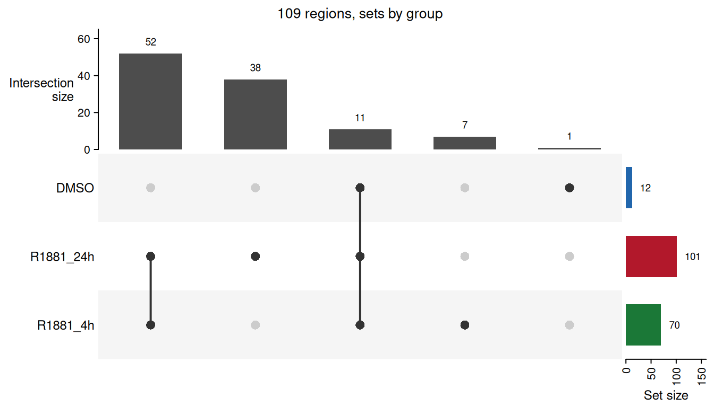
Most of the sites are shared by the two R1881 time points, and nearly all of those found without ligand are found with it too. Only one region is specific to DMSO.
How similar the peak sets are
The UpSet plot counts regions by group.
plotSampleCorrelation() with
method = "jaccard" compares the samples themselves on where
their peaks were called, before any read is counted, the occupancy
heatmap DiffBind draws right after reading the peaks. The
Jaccard index of two samples is the number of places where both called a
peak over the number where either did, from zero for nothing in common
to one for identical peak sets, and the samples are clustered on one
minus it.
plotSampleCorrelation(consensus,
method = "jaccard",
groupBy = "condition",
annotationColumns = c("condition", "replicate"))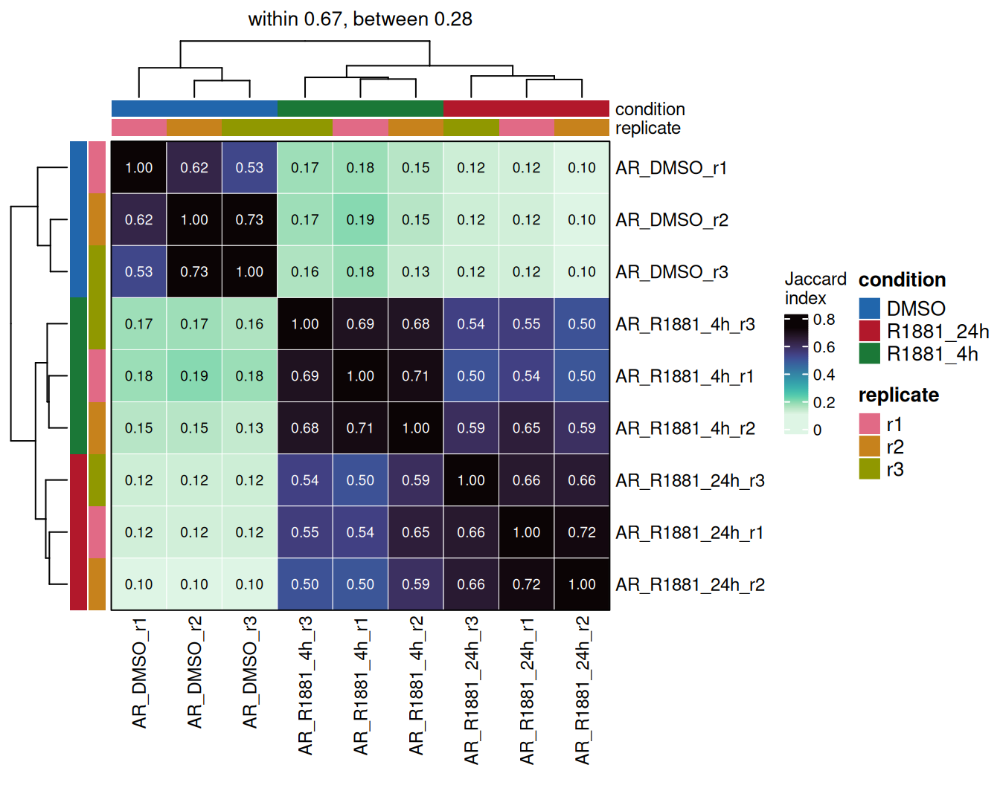
The places are the regions of the union of all the peaks, so a broad
peak and a narrow one on the same site count as a match.
jaccardLevel = "basepair" counts the bases covered instead,
as bedtools jaccard does, and then two samples calling the
same sites with different widths come out less similar.
The replicates of each condition share between half and three
quarters of their peaks, and the two time points of R1881 overlap almost
as much, 0.50 to 0.65. DMSO stands apart from both, at 0.10 to 0.19,
which is mostly a matter of numbers: thirteen peaks against a hundred
cannot overlap much, even when, as here, nearly all of the thirteen are
among the hundred. A sample with far fewer peaks than its replicates
looks dissimilar to all of them for the same reason, and
consensusData(consensus)$samples gives the number of peaks
to read the index against.
Counting
countReads() counts fragments over the consensus. Given
the sheet it finds the BAM files itself, and takes the sample names and
the metadata from the same table.
counts <- countReads(consensus,
sampleSheet = sampleSheet)
counts
> class: RegionSetDE.counts
> dim: 109 9
> metadata(2): signal.type count.like
> assays(2): counts input
> rownames(109): consensus|19:46089709-46090037
> consensus|19:46182368-46182658 ... consensus|19:57823636-57824055
> consensus|19:57840011-57840689
> rowData names(8): region.set region.id ... peak.groups peak.samples
> colnames(9): AR_DMSO_r1 AR_DMSO_r2 ... AR_R1881_24h_r2 AR_R1881_24h_r3
> colData names(13): sample bam.file ... library.size input.library.sizeThe sheet names an input for every sample, so the input is counted as
well, over the same regions and with the same filters, into an assay of
its own beside the counts. Each input file is read once, whatever the
number of samples pointing to it, and every sample gets the counts of
its own input in its column; a sample without input gets
NA. Nothing subtracts the input from the counts, which stay
the reads of the sample as the model needs them. The input is there to
judge the enrichment of the regions, and to check that a change between
conditions does not show in the input too, which would point to copy
number rather than to binding. countInput = FALSE leaves it
out.
countTable(counts, input = TRUE, format = "matrix")[1:3, 1:3]
> AR_DMSO_r1 AR_DMSO_r2 AR_DMSO_r3
> consensus|19:46089709-46090037 0 0 0
> consensus|19:46182368-46182658 0 0 0
> consensus|19:46300807-46301375 1 1 1Duplicates are dropped and reads below MAPQ 20 are
ignored, both of which can be changed through
removeDuplicates and minMapq.
excludeChromosomes leaves chromosomes out of the library
sizes, the mitochondrial genome in ATAC-seq above all, and accepts the
names in either style. The files are read one after the other here, the
slices being small; on whole-genome BAMs nThreads spreads
them over several workers.
Every region is counted whole here, one row per region, which is the right choice for a transcription factor whose peaks are a few hundred base pairs wide and change as a block. Counting in tiles, and recentring the regions on the summits as DiffBind does, are the two alternatives, and their own section says when each is worth it.
The count table
countTable() pulls the values out of any counts, fit or
results object, raw or normalised, in three shapes.
countTable(counts) %>%
head(3)
> region.set region.id seqnames
> consensus|19:46089709-46090037 consensus 19:46089709-46090037 19
> consensus|19:46182368-46182658 consensus 19:46182368-46182658 19
> consensus|19:46300807-46301375 consensus 19:46300807-46301375 19
> start end width peak.DMSO peak.R1881_4h
> consensus|19:46089709-46090037 46089709 46090037 329 FALSE TRUE
> consensus|19:46182368-46182658 46182368 46182658 291 FALSE TRUE
> consensus|19:46300807-46301375 46300807 46301375 569 FALSE TRUE
> peak.R1881_24h peak.groups peak.samples
> consensus|19:46089709-46090037 TRUE 2 5
> consensus|19:46182368-46182658 FALSE 1 2
> consensus|19:46300807-46301375 TRUE 2 6
> AR_DMSO_r1 AR_DMSO_r2 AR_DMSO_r3 AR_R1881_4h_r1
> consensus|19:46089709-46090037 0 0 0 1
> consensus|19:46182368-46182658 0 0 0 2
> consensus|19:46300807-46301375 0 1 0 2
> AR_R1881_4h_r2 AR_R1881_4h_r3 AR_R1881_24h_r1
> consensus|19:46089709-46090037 4 2 0
> consensus|19:46182368-46182658 3 1 1
> consensus|19:46300807-46301375 6 7 13
> AR_R1881_24h_r2 AR_R1881_24h_r3
> consensus|19:46089709-46090037 3 3
> consensus|19:46182368-46182658 1 2
> consensus|19:46300807-46301375 20 21The wide format gives the coordinates, the occupancy of every region,
and one column per sample. format = "matrix" keeps the
values only, with the regions as row names, which is what
ComplexHeatmap or any other tool expects:
countTable(counts, format = "matrix")[1:3, 1:4]
> AR_DMSO_r1 AR_DMSO_r2 AR_DMSO_r3 AR_R1881_4h_r1
> consensus|19:46089709-46090037 0 0 0 1
> consensus|19:46182368-46182658 0 0 0 2
> consensus|19:46300807-46301375 0 1 0 2format = "long" gives one row per region and sample with
the sample annotation attached, ready for ggplot2:
countTable(counts, format = "long") %>%
dplyr::select(region.id, sample, condition, counts) %>%
head(4)
> region.id sample condition counts
> 1 19:46089709-46090037 AR_DMSO_r1 DMSO 0
> 2 19:46182368-46182658 AR_DMSO_r1 DMSO 0
> 3 19:46300807-46301375 AR_DMSO_r1 DMSO 0
> 4 19:46313848-46314455 AR_DMSO_r1 DMSO 2On a tiled object level chooses between one row per tile
and the tiles summed back into their regions. The same function returns
the normalised values, once the normalisation has been run, below.
Library summary
libInfo() puts the reads of every file next to the ones
in the regions.
libInfo(counts, annotationColumns = "condition")
> sample condition paired.end fragment.length bam.reads bam.mapped
> 1 AR_DMSO_r1 DMSO TRUE NA 7913 7913
> 2 AR_DMSO_r2 DMSO TRUE NA 12038 12038
> 3 AR_DMSO_r3 DMSO TRUE NA 9185 9185
> 4 AR_R1881_4h_r1 R1881_4h TRUE NA 7836 7836
> 5 AR_R1881_4h_r2 R1881_4h TRUE NA 11205 11205
> 6 AR_R1881_4h_r3 R1881_4h TRUE NA 12693 12693
> 7 AR_R1881_24h_r1 R1881_24h TRUE NA 14080 14080
> 8 AR_R1881_24h_r2 R1881_24h TRUE NA 10793 10793
> 9 AR_R1881_24h_r3 R1881_24h TRUE NA 10332 10332
> library.size reads.in.regions FRiP input.id input.library.size
> 1 3588 147 0.0410 input 5353
> 2 5469 187 0.0342 input 5353
> 3 4183 150 0.0359 input 5353
> 4 3582 605 0.1689 input 5353
> 5 5121 931 0.1818 input 5353
> 6 5806 751 0.1293 input 5353
> 7 6326 1149 0.1816 input 5353
> 8 4889 1197 0.2448 input 5353
> 9 4651 872 0.1875 input 5353
> input.in.regions input.FRiP
> 1 38 0.0071
> 2 38 0.0071
> 3 38 0.0071
> 4 38 0.0071
> 5 38 0.0071
> 6 38 0.0071
> 7 38 0.0071
> 8 38 0.0071
> 9 38 0.0071The columns measure different things and are not expected to agree.
bam.reads and bam.mapped come from the index
of each file, so they cost nothing to read, and they count alignment
records: a paired-end fragment is two of them. library.size
is the number of fragments that went through the filters of the
counting, each fragment once, which on paired-end data makes it about
half of bam.mapped, less the duplicates and the reads of
low mapping quality. reads.in.regions counts the fragments
falling in the consensus, and the FRiP is its share of
library.size.
Three to four per cent of the fragments fall in the consensus without ligand, against thirteen to twenty-five per cent after it. This is the enrichment the experiment produced, and holding on to it through the normalisation is the whole difficulty of the next section.
The input columns give the same numbers for the input of each sample.
The input puts 0.7 % of its fragments in the consensus, which is what
the regions collect with no enrichment at all, so even the samples
without ligand are about five times enriched over it, and the treated
ones eighteen to thirty-five times. A sample whose FRiP sits close to
the one of its input carries little signal in the regions, however deep
it was sequenced. fragment.length is empty here because
every library is paired-end.
Background bins
countBackground() counts the same libraries over wide
bins covering everything, and stores the result inside the counts
object. It is needed for background normalisation and for the
diagnostics that compare one normalisation against another.
counts <- countBackground(counts, binSize = 10000)Normalisation
This is the section that matters for this dataset.
The methods that come from RNA-seq, TMM, RLE and upper quartile, rest on one assumption: most features do not change, so the middle of the distribution of ratios between two samples is the technical difference between them and can be divided out. Across a transcriptome that usually holds. Here it does not. The ligand brings the receptor to chromatin, the number of bound sites goes up several fold, and most regions really did change in the same direction. Handing that distribution to TMM means telling it that the biology is a loading artefact.
plotNormComparison() puts the methods side by side
before any of them is committed to.
plotNormComparison(counts,
methods = c("librarySize", "background", "TMM", "readsInRegions"))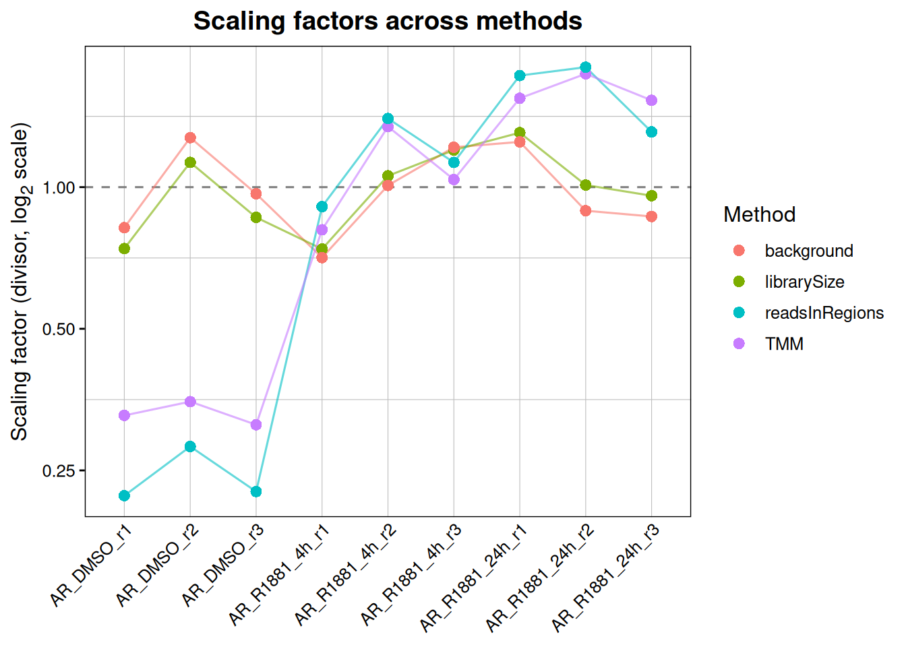
The consequence is easiest to see by running the same test several times and changing nothing but the normalisation.
normalisationEffect <-
lapply(c("librarySize", "background", "TMM", "RLE", "readsInRegions"),
function(method) {
normalised <- normalizeCounts(counts, method = method, verbose = FALSE)
fitted <- fitRegions(normalised, design = ~ condition, engine = "edgeR", verbose = FALSE)
tested <- resultsTable(testRegions(fitted,
contrast = c("condition", "R1881_24h", "DMSO"),
verbose = FALSE))
data.frame(method = method,
up = sum(tested$diff.status == "up"),
down = sum(tested$diff.status == "down"),
median.log2FC = round(median(tested$log2FC), 2))
})
dplyr::bind_rows(normalisationEffect)
> method up down median.log2FC
> 1 librarySize 78 2 2.55
> 2 background 87 2 2.82
> 3 TMM 8 3 0.78
> 4 RLE 8 4 0.60
> 5 readsInRegions 3 5 0.34Same counts, same design, same engine. Library size and background
normalisation find the androgen response. TMM and RLE remove most of it.
readsInRegions, which scales every library by the reads
falling inside the consensus, removes it entirely and turns it upside
down: that is the scheme that starts by declaring the total signal in
the peaks to be equal in every sample, which is precisely the quantity
this experiment changed.
The rule this dataset illustrates is worth stating plainly. If the treatment is expected to change the global amount of binding, the normalisation must not be computed from the bound regions. What is comparable between the samples is the background, so that is where the factors should come from. When there is no reason to expect a global change, the RNA-seq methods are fine and often better, because they are less sensitive to differences in signal-to-noise between libraries. The point is not that TMM is bad; it is that the assumption behind it is a statement about the experiment, and it should be checked rather than inherited from a default.
Greenlist normalisation
This dataset is ChIP-seq and is normalised on its background below. The greenlist is for the case where that is not possible, and the code of this section is shown, not run.
What a greenlist is. A set of genomic bins whose background is consistent across CUT&RUN or CUT&Tag experiments, whatever the antibody: regions of steady, low noise, kept at least 5 kb away from genes so that no target is expected to bind there. Since the reads over them do not depend on the target, the differences between samples over them are technical, which makes them a reference built into every library. The lists come from de Mello et al. (Briefings in Bioinformatics 25, bbad538, 2024), who picked the bins by their Shannon entropy across hundreds of public libraries.
When to use it. CUT&RUN and CUT&Tag without
a spike-in, or with a spike-in that cannot be trusted. Those assays have
almost no background, so the wide bins "background"
normalisation is estimated from hold only a handful of reads, and the
region-based methods, TMM or RLE, carry the same assumption that fails
in the example above: no global change. The greenlist sits away from the
regions of interest and keeps its noise whatever the treatment does to
the target, so it holds up when the target changes globally. It is not
meant for ChIP-seq, where the background is abundant and does the same
job with far more reads behind it.
How. Three steps: load the list for the assembly and the assay, count the libraries over it with the same filters as the regions, and normalise.
greenlist <- loadGreenlist("hg38", assay = "cuttag")
counts <- countGreenlist(counts, greenlist = greenlist)
counts <- normalizeCounts(counts, method = "greenlist")Lists are installed for hg38 CUT&RUN and CUT&Tag and for mm39
CUT&RUN, and availableRegionLists(type = "greenlist")
prints them. countGreenlist() stores its counts inside the
object, where normalizeCounts() finds them. The fragments
are counted once each, at their centre, which is how the paper counted
them with multiBamSummary --centerReads. By default the
factors are the median of ratios, the size factor DESeq2 computes and
the one the greenlist paper used;
greenlistEstimator = "TMM" or "sum" change
that. Counts collected with another tool go in through
greenlistCounts, as a total per sample or a matrix.
countGreenlist() holds the libraries to the conditions
the lists were built under. The greenlist regions were kept at least 5
kb from genes so that no target binds there, and a greenlist region that
one of the regions of the study falls on says the target does bind there
in these cells: those are left out, and how many were is reported,
unless excludeCounted = FALSE. A library below the depth
the authors required of a library to enter the construction of the list,
1.5 million reads for human CUT&RUN, 1 million for mouse CUT&RUN
and 500,000 for human CUT&Tag, raises a warning, and so does a
library reaching fewer than half as many greenlist regions as the median
one. normalizeCounts() then says how many regions carry
reads in every sample, which is what the median of ratios rests on, as
it does in DESeq2. The paper sets no rule per group of samples; the
number of regions shared by every library is the one that decides how
steady the factors are.
What each library holds over the list is kept beside the counts:
totals is the number of fragments on the list,
regions.covered the regions holding at least one of them,
and library.fraction their share of the library. The factor
of a library is only as steady as the number of fragments behind it. A
library holding a handful, which happens on shallow libraries or with a
list built for another assay, gets a factor that is mostly noise, and
one holding none gets no factor at all.
Factors from elsewhere
When the factors come from outside the data, a spike-in counted with
another pipeline, deepTools, or a previous analysis,
method = "manual" takes them as they are.
factorType says how they apply: "division" for
size factors the counts are divided by, as DESeq2 writes them,
"multiplication" for scale factors the counts are
multiplied by, as deepTools and most spike-in protocols write them.
Named factors are matched to the samples by name and may cover samples
absent from the object.
backgroundCounts <- normalizeCounts(counts, method = "background", verbose = FALSE)
backgroundFactors <- setNames(sampleInfo(backgroundCounts)$scaling.factor,
colnames(backgroundCounts))
round(backgroundFactors, 2)
> AR_DMSO_r1 AR_DMSO_r2 AR_DMSO_r3 AR_R1881_4h_r1 AR_R1881_4h_r2
> 0.84 1.27 0.97 0.70 1.01
> AR_R1881_4h_r3 AR_R1881_24h_r1 AR_R1881_24h_r2 AR_R1881_24h_r3
> 1.21 1.25 0.89 0.86
manualCounts <- normalizeCounts(counts,
method = "manual",
scalingFactors = backgroundFactors,
factorType = "division",
verbose = FALSE)
all.equal(countTable(manualCounts, normalized = TRUE, format = "matrix"),
countTable(backgroundCounts, normalized = TRUE, format = "matrix"))
> [1] TRUEThe factors of the background normalisation, handed back by hand,
give the same normalised values. Getting factorType
backwards inverts every factor, which on a spike-in experiment turns the
largest global change into the smallest; the direction the source writes
its factors in is worth checking before anything else.
When the spike-in was aligned separately,
method = "spikeIn" takes the number of reads each sample
put on the exogenous genome, through spikeInCounts, and
turns them into factors itself.
Normalised counts
The factors are stored in the sample table of the object, and the
normalised values next to the raw ones. sampleInfo()
returns the sample table, the annotation of the sheet together with what
the package added to it, from a counts object, a fit or the results
alike; columns keeps only the ones named.
sampleInfo(counts, columns = c("sample", "condition", "library.size", "scaling.factor"))
> sample condition library.size scaling.factor
> 1 AR_DMSO_r1 DMSO 3588 0.8447824
> 2 AR_DMSO_r2 DMSO 5469 1.2714786
> 3 AR_DMSO_r3 DMSO 4183 0.9664067
> 4 AR_R1881_4h_r1 R1881_4h 3582 0.6997805
> 5 AR_R1881_4h_r2 R1881_4h 5121 1.0060053
> 6 AR_R1881_4h_r3 R1881_4h 5806 1.2113487
> 7 AR_R1881_24h_r1 R1881_24h 6326 1.2467688
> 8 AR_R1881_24h_r2 R1881_24h 4889 0.8893384
> 9 AR_R1881_24h_r3 R1881_24h 4651 0.8640907countTable() returns the normalised values with
normalized = TRUE, in any of its three formats.
countTable(counts, normalized = TRUE) %>%
head(3)
> region.set region.id seqnames
> consensus|19:46089709-46090037 consensus 19:46089709-46090037 19
> consensus|19:46182368-46182658 consensus 19:46182368-46182658 19
> consensus|19:46300807-46301375 consensus 19:46300807-46301375 19
> start end width peak.DMSO peak.R1881_4h
> consensus|19:46089709-46090037 46089709 46090037 329 FALSE TRUE
> consensus|19:46182368-46182658 46182368 46182658 291 FALSE TRUE
> consensus|19:46300807-46301375 46300807 46301375 569 FALSE TRUE
> peak.R1881_24h peak.groups peak.samples
> consensus|19:46089709-46090037 TRUE 2 5
> consensus|19:46182368-46182658 FALSE 1 2
> consensus|19:46300807-46301375 TRUE 2 6
> AR_DMSO_r1 AR_DMSO_r2 AR_DMSO_r3 AR_R1881_4h_r1
> consensus|19:46089709-46090037 0 0.0000000 0 1.429020
> consensus|19:46182368-46182658 0 0.0000000 0 2.858039
> consensus|19:46300807-46301375 0 0.7864859 0 2.858039
> AR_R1881_4h_r2 AR_R1881_4h_r3 AR_R1881_24h_r1
> consensus|19:46089709-46090037 3.976122 1.6510523 0.0000000
> consensus|19:46182368-46182658 2.982092 0.8255262 0.8020733
> consensus|19:46300807-46301375 5.964183 5.7786831 10.4269534
> AR_R1881_24h_r2 AR_R1881_24h_r3
> consensus|19:46089709-46090037 3.373294 3.471858
> consensus|19:46182368-46182658 1.124431 2.314572
> consensus|19:46300807-46301375 22.488629 24.303004A normalised value is the raw count divided by the scaling factor of
its sample, so it stays on the scale of counts rather than of counts per
million. format = "matrix" gives the values alone, for a
heatmap or any other tool, and format = "long" puts them in
a norm.counts column next to the sample annotation. The fit
and the results carry the same object, so
countTable(fit, normalized = TRUE) and
countTable(results$R1881_24h_vs_DMSO, normalized = TRUE)
return the same values later on; the second needs the results to have
been built with carryCounts = TRUE, which is the
default.
What is used for the test is not this table. The model is fitted on the raw counts with the factors as offsets, which keeps the count nature of the data that the negative binomial relies on. The normalised table is for looking at, plotting and exporting.
Quality control
Two questions, asked once the normalisation is in place: do the
replicates look like each other, and does the structure of the data
match the design. They come after the normalisation because an
ordination reads distances between samples, and a factor per sample
moves every one of those distances; a PCA on raw counts shows the depth
of each library as much as its biology. Both functions use the
normalised values by default, and useOffsets = FALSE
switches to the raw ones for comparison.
plotRegionPCA(counts, colourBy = "condition", shapeBy = "time")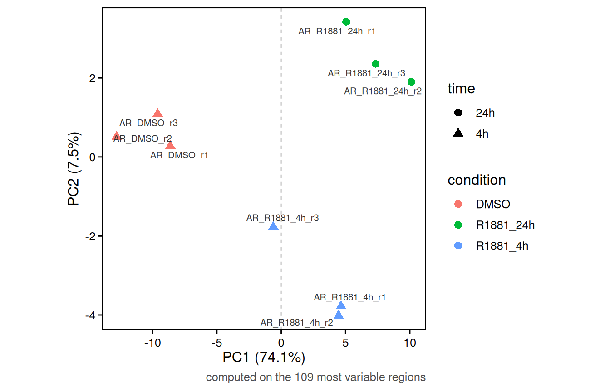
The first component carries most of the variance and separates treated from untreated; the second separates the two durations. Replicates sit together. A component that lines up with the batch instead, or a replicate landing in the wrong group, is worth knowing about before it turns into a dispersion estimate.
samples restricts either figure to some of the
libraries, by name, by position or with a logical vector, which is how a
difference hidden behind the largest one is brought out. The
normalisation of the whole analysis is kept, so the values are the ones
the model sees.
plotRegionPCA(counts,
samples = sampleInfo(counts)$treatment == "R1881",
colourBy = "condition")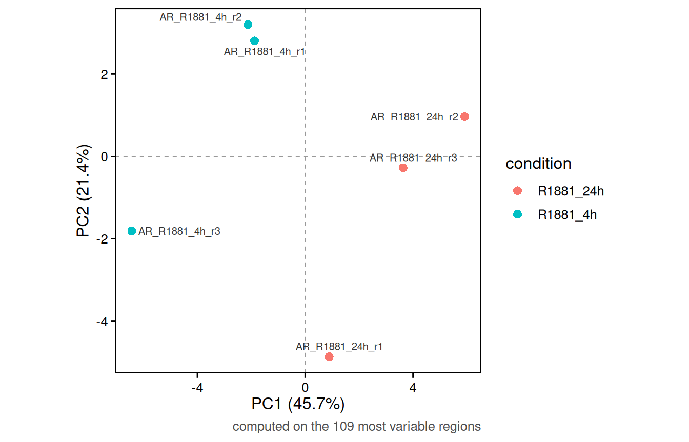
Without DMSO the two durations separate along the first component, which now carries 45 % of the variance, with one replicate of four hours further out than the others.
plotSampleCorrelation(counts,
annotationColumns = c("condition", "replicate"),
method = "spearman")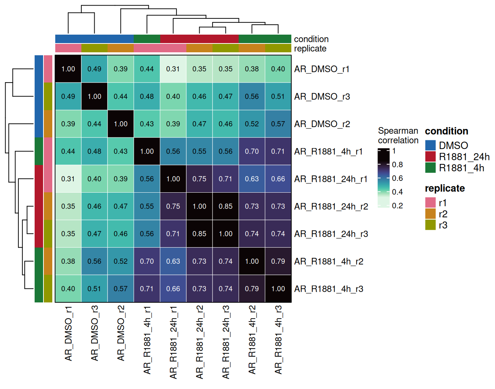
Any column of the sheet can annotate the heatmap, and the dendrogram is built on one minus the correlation. Rank correlations barely move with the normalisation, since a single factor per sample cannot change the order of the regions within it; the PCA is the one that needs it.
Differential binding
The design is an ordinary formula over the columns of the sheet.
fit <- fitRegions(counts, design = ~ condition, engine = "edgeR")engine takes "edgeR", "DESeq2"
or "limma". The scaling factors computed above enter the
fit as offsets, so the model sees the raw counts with the normalisation
applied where it belongs rather than a matrix of adjusted values.
One contrast
A single comparison is written as a vector of three strings: the column of the sample table, the group of interest, and the group it is compared against.
resultsEarly <- testRegions(fit,
contrast = c("condition", "R1881_4h", "DMSO"),
FDR = 0.05,
log2FC = 1)
resultsEarly
> An object of class 'RegionSetDE.results'
> contrast : condition: R1881_4h vs DMSO
> engine : edgeR
> regions : 109
> counts carried : 9 samples
> thresholds : FDR < 0.05 | |log2FC| > 1
> changing regions:
> consensus: 59 up, 0 downThe fold changes read as the second element over the third, so a
positive log2FC means more signal after four hours of R1881
than in DMSO; swapping the two groups flips every sign and changes
nothing else. The groups are written as they appear in the column, and
the design does not need to have been set up with either of them as the
reference.
Every contrast at once
Three conditions give three pairwise comparisons, and they come from
the same fit. pairwiseContrasts() writes them out from a
column of the sample table.
contrasts <- pairwiseContrasts(fit, column = "condition")
contrasts
> $R1881_4h_vs_DMSO
> [1] "condition" "R1881_4h" "DMSO"
>
> $R1881_24h_vs_DMSO
> [1] "condition" "R1881_24h" "DMSO"
>
> $R1881_24h_vs_R1881_4h
> [1] "condition" "R1881_24h" "R1881_4h"Each level is compared against the ones before it, in the order they
appear in the sheet, so DMSO is the reference whenever it is involved
and the fold changes read as gains under treatment. levels
changes the order, and reference = "DMSO" would write only
the two comparisons against the vehicle. A named list of contrasts runs
all of them in one call:
results <- testRegions(fit,
contrast = contrasts,
FDR = 0.05,
log2FC = 1,
carryCounts = TRUE)
results
> An object of class 'RegionSetDE.resultsList'
> contrasts : 3
>
> name contrast n.regions up down
> R1881_4h_vs_DMSO condition: R1881_4h vs DMSO 109 59 0
> R1881_24h_vs_DMSO condition: R1881_24h vs DMSO 109 87 2
> R1881_24h_vs_R1881_4h condition: R1881_24h vs R1881_4h 109 7 1FDR and log2FC set the cut-offs a region
has to pass to be labelled up or down: an
adjusted p-value below 0.05 and a fold change beyond two in either
direction. They label the regions and do not touch the test, so
updateThresholds() can change them later without testing
again, for every contrast of the list or for the ones named in
contrast; lfcThreshold is the argument that
moves the fold change inside the test itself.
carryCounts = TRUE keeps the counts inside the results,
which is what lets the plots below draw signal without being handed the
counts object again. The multiple testing correction is applied within
each contrast, never across them, so every added contrast adds its own
share of false positives.
Four hours of androgen already recruit AR to most of its sites, and the second day adds a few more and loses one. The rest of this section uses the twenty-four hour comparison, and shows how to reach the others.
The results table
One contrast is taken out of the list by name, and
resultsTable() returns its table:
resultsLate <- results$R1881_24h_vs_DMSO
resultsTable(resultsLate) %>%
head(3)
> region.set region.id tile.id seqnames start end width
> 1 consensus 19:46089709-46090037 NA 19 46089709 46090037 329
> 2 consensus 19:46182368-46182658 NA 19 46182368 46182658 291
> 3 consensus 19:46300807-46301375 NA 19 46300807 46301375 569
> log2FC average.signal average.signal.DMSO average.signal.R1881_4h
> 1 4.104330 9.473017 8.822609 9.803347
> 2 3.549098 9.327084 8.822609 9.698435
> 3 5.376463 10.962974 9.040266 10.484667
> average.signal.R1881_24h stat stat.distribution df1 df2 p.value
> 1 9.576701 6.785618 f 1 654 9.398431e-03
> 2 9.303106 4.478715 f 1 654 3.469669e-02
> 3 11.914385 49.176538 f 1 654 5.849435e-12
> FDR diff.status peak.DMSO peak.R1881_4h peak.R1881_24h peak.groups
> 1 1.422818e-02 up FALSE TRUE TRUE 2
> 2 4.347057e-02 up FALSE TRUE FALSE 1
> 3 9.108406e-11 up FALSE TRUE TRUE 2
> peak.samples
> 1 5
> 2 2
> 3 6| Column | Content |
|---|---|
region.set, region.id
|
the set the region belongs to, and its identifier |
seqnames, start,
end, width
|
its coordinates |
log2FC |
the log2 fold change, first level of the contrast over the second |
average.signal |
the average abundance of the region over all the samples; for edgeR the log2 counts per million |
average.signal.<level> |
the same, over the samples of one condition only |
stat |
the test statistic of the engine: the quasi-likelihood F for edgeR |
stat.distribution, df1,
df2
|
the distribution stat follows under the
null, and its degrees of freedom |
p.value, FDR
|
the p-value, and its adjustment across all the regions of the contrast |
diff.status |
up, down or
null, from the FDR and log2FC
cut-offs of testRegions()
|
peak.<group>,
peak.groups, peak.samples
|
the occupancy, carried over from the consensus |
The per-condition averages come for every level of the column the
contrast compares, all three of them here, so every contrast of the list
has the same columns and the stacked table below lines up.
signalBy names another column of the sample table to
average over instead, and signalBy = FALSE leaves them out.
Read side by side, they say what a fold change is made of: the same
log2FC of 3 can be a site going from absent to present, or from bound to
more bound, and the averages tell the two apart.
resultsTable() on the whole list stacks the contrasts,
which is the form to filter with dplyr. The
contrast column in front holds the same names the other
functions take, and contrast.description says what each one
compares:
resultsTable(results) %>%
dplyr::filter(diff.status != "null") %>%
dplyr::count(contrast, diff.status)
> contrast diff.status n
> 1 R1881_24h_vs_DMSO down 2
> 2 R1881_24h_vs_DMSO up 87
> 3 R1881_24h_vs_R1881_4h down 1
> 4 R1881_24h_vs_R1881_4h up 7
> 5 R1881_4h_vs_DMSO up 59topRegions() sorts and trims, and takes the contrast by
name:
topRegions(results, contrast = "R1881_24h_vs_R1881_4h", n = 5) %>%
dplyr::select(region.id, log2FC, FDR, peak.R1881_4h, peak.R1881_24h)
> region.id log2FC FDR peak.R1881_4h peak.R1881_24h
> 1 19:55670391-55670922 -4.685281 2.136961e-09 TRUE FALSE
> 2 19:52645106-52645397 5.334727 4.066820e-03 FALSE TRUE
> 3 19:46300807-46301375 1.832773 4.066820e-03 TRUE TRUE
> 4 19:50010024-50010865 1.697581 4.066820e-03 TRUE TRUE
> 5 19:48582156-48582622 2.437200 1.778736e-02 TRUE TRUEThe strongest change between the two time points is a loss: a site bound after four hours and released by twenty-four, which the comparisons against DMSO alone would not have shown.
For a power analysis
The statistic, its distribution and its degrees of freedom are in the
table so that the test can be carried further, into a power or sample
size calculation with power4peaks
for instance. contrastInfo() gathers the rest of what such
a calculation needs, one row per contrast: the engine, the two groups
and how many samples each holds, and the degrees of freedom summarised
over the regions.
contrastInfo(results)
> contrast contrast.description engine column
> 1 R1881_4h_vs_DMSO condition: R1881_4h vs DMSO edgeR condition
> 2 R1881_24h_vs_DMSO condition: R1881_24h vs DMSO edgeR condition
> 3 R1881_24h_vs_R1881_4h condition: R1881_24h vs R1881_4h edgeR condition
> group1 group2 n.group1 n.group2 stat.distribution df1 df2 n.regions
> 1 R1881_4h DMSO 3 3 f 1 654 109
> 2 R1881_24h DMSO 3 3 f 1 654 109
> 3 R1881_24h R1881_4h 3 3 f 1 654 109The statistics themselves are the stat column of each
contrast, resultsTable(results$R1881_24h_vs_DMSO)$stat. The
distribution is the one of the engine: an F with df1 and
df2 degrees of freedom for edgeR, a chi-squared with
df1 when the dispersion was fixed, a t with
df1 for limma, voom and dream, a standard normal for
DESeq2. The degrees of freedom of 654 here are not a mistake: on these
regions edgeR estimates an infinite prior, every region borrowing all
its variability from the others, and caps the total at the residual
degrees of freedom of all the regions together, 109 regions times 6.
Volcano and MA plots
Every plot takes the contrast by name, and asks for one when the
object holds several. The dashed lines mark the cut-offs given to
testRegions(): the horizontal one the FDR, the two vertical
ones the fold change on either side of zero.
plotVolcano(results, contrast = "R1881_24h_vs_DMSO", labelTop = 5)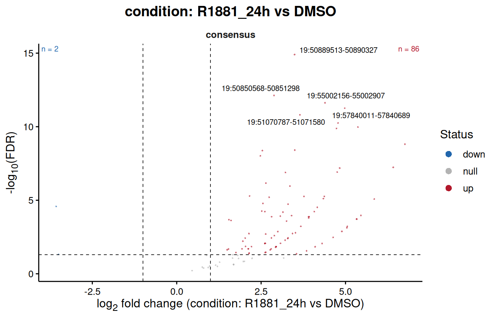
plotVolcano(results, contrast = "R1881_24h_vs_R1881_4h", labelTop = 5)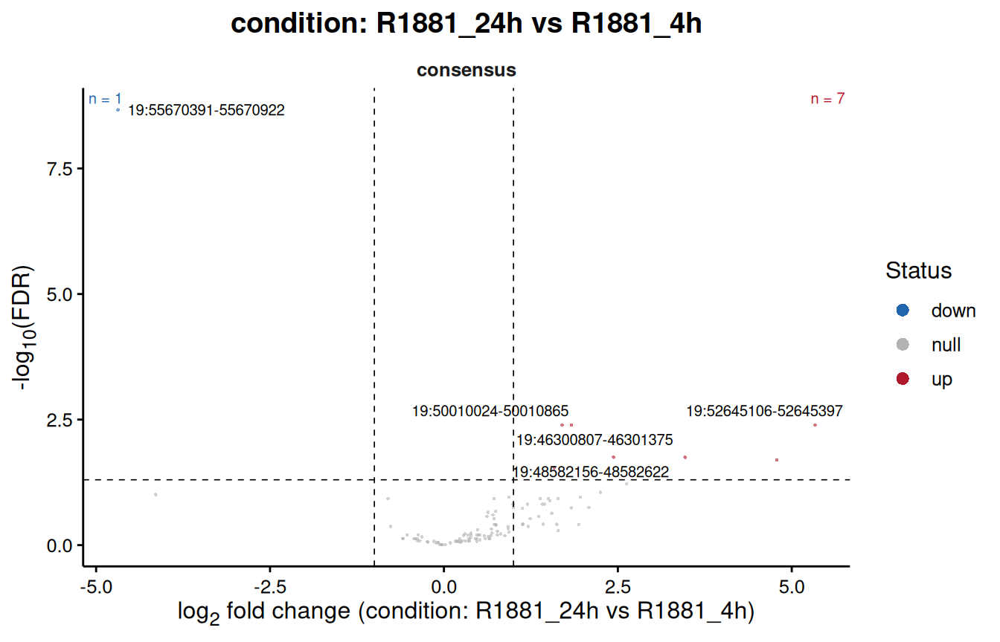
The MA plot puts the fold change against the average abundance, which the volcano hides. It is the place to look for a trend: a cloud leaning up or down with abundance means the normalisation left an intensity-dependent bias behind, and a result sitting on such a trend says more about the normalisation than about the biology.
plotResultsMA(results, contrast = "R1881_24h_vs_DMSO")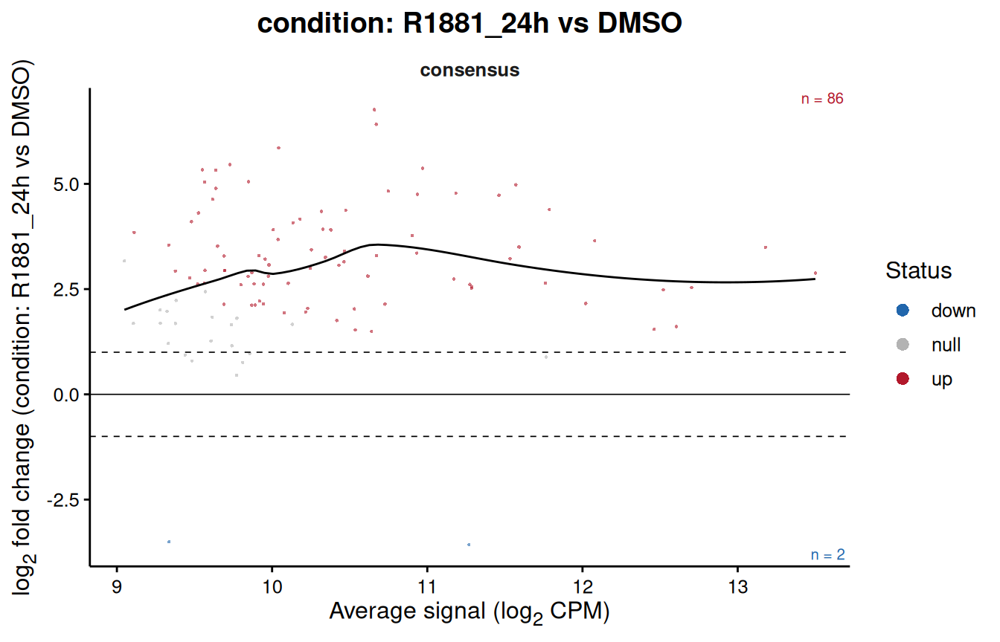
The same fold change cut-off appears here as two dashed horizontal lines.
The whole cloud sits above zero, as it should after a ligand that recruits its receptor genome-wide, and it does so at every abundance. The same plot after TMM would have been centred on zero by construction.
plotTopHeatmap(results, contrast = "R1881_24h_vs_DMSO", n = 30, annotationColumns = "condition")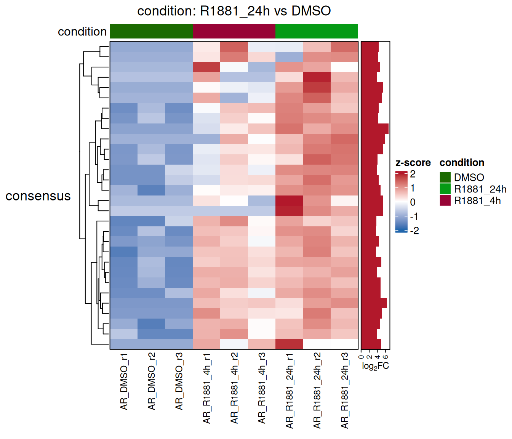
Signal around the regions
A fold change is a single number per region.
plotProfile() shows the reads behind it, in bins around the
centre of every region that changed, as dba.plotProfile()
does in DiffBind: one heatmap per condition, the regions going
up and those going down as two groups of rows, and their mean profile on
top.
plotProfile(results,
contrast = "R1881_24h_vs_DMSO",
groupBy = "condition")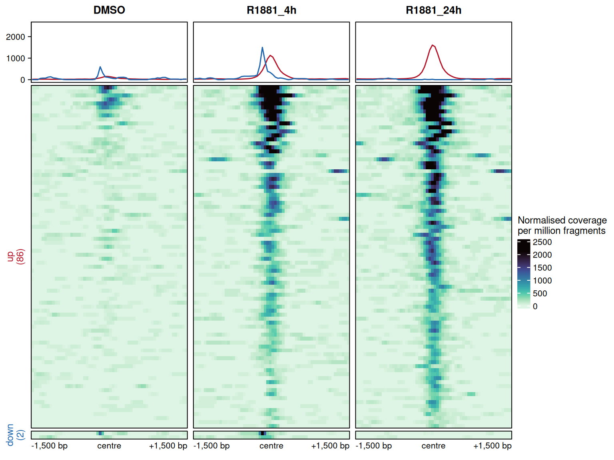
The signal comes from the BAM files the counts were made from, with the same filters, and is scaled by the factors of the normalisation above, so the panels compare the way the normalised counts do. The rows are sorted by their mean signal and keep the same order in every panel, and the colour scale is shared, so a row read from left to right is one region gaining or losing receptor. Here the 82 regions going up are nearly empty in DMSO and already bound after four hours, with the pile centred on the region; the single region going down is the one site AR leaves.
What the plot guards against is a change spread over the whole window
rather than centred on the site, which points to background rather than
binding, and a pile sitting away from the centre, which says the regions
were not aligned on the signal. The centre here is the midpoint of each
consensus region; counted with summits, below, the regions carry their summit and the
profiles are aligned on it.
plotProfile() does two things in one call: it reads the
signal through computeProfiles(), and draws it. Reading is
the slow part, since every BAM file is opened again, so when the same
profiles are drawn more than once, or used for something else, it pays
to compute them once and hand the result to
plotProfile():
profileData <- computeProfiles(results,
contrast = "R1881_24h_vs_DMSO",
groupBy = "condition")
names(profileData$profiles)
> [1] "DMSO" "R1881_4h" "R1881_24h"
dim(profileData$profiles$DMSO)
> [1] 89 60profiles holds one matrix per condition, or per sample
without groupBy, with one row per region and one column per
bin; regions holds the window drawn for every row and the
group it belongs to, and bins the distance of every bin
from the centre. The arguments choosing the regions, the samples and the
window all belong to computeProfiles(), and
plotProfile() passes them on when it is given an object
rather than the profiles. style = "lines" draws the mean
profiles alone, with their standard error:
plotProfile(profileData, style = "lines")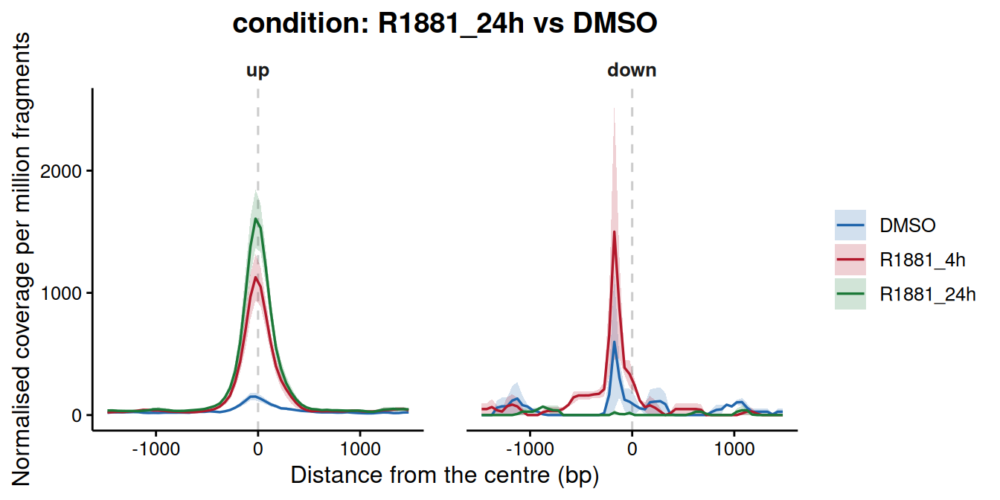
The regions need not come from the test. regions takes
any GRanges, a named list of them, one group of rows each,
or a region set, and the object only supplies the reads and the
normalisation. The consensus split by occupancy, for instance, the sites
already bound without ligand against those found only after it:
consensusRanges <- regionRanges(consensus)$consensus
plotProfile(counts,
regions = list(boundInDMSO = consensusRanges[consensusRanges$peak.DMSO],
newWithR1881 = consensusRanges[!consensusRanges$peak.DMSO]),
groupBy = "condition",
style = "lines")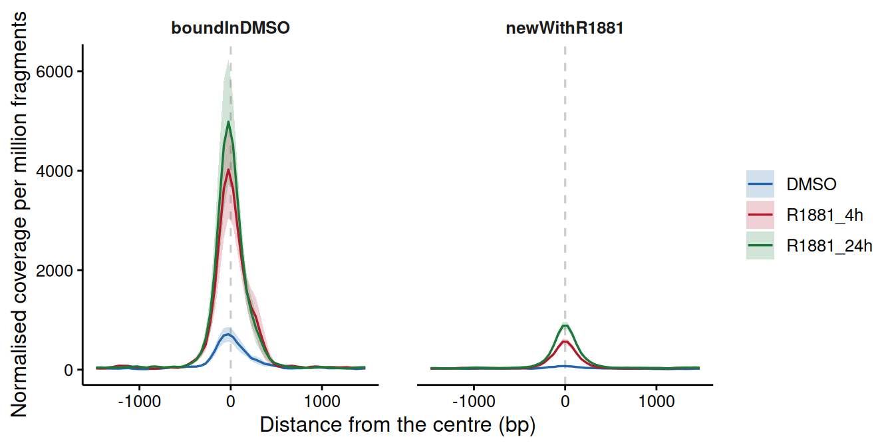
blacklist leaves out the rows whose drawn window touches
the list, TRUE taking the blacklist stored in the object,
since a clean region can sit next to an artefact that the window then
shows; whitelist keeps the regions overlapping a list,
promoters for instance; samples draws some of the libraries
only.
A bigWig file per sample can take the place of the BAM files, through
a bigwig column of the sample sheet or
signalFiles; its signal is then drawn as it is, so it has
to be normalised already.
Occupancy and the test, read together
The point of keeping the peak calls around is to ask whether the two
agree. peakOccupancyTable() cross-tabulates the result of
the test against which groups called a peak.
peakOccupancyTable(results, contrast = "R1881_24h_vs_DMSO")
> occupancy n.regions down null up percent.changed
> 1 shared 11 0 1 10 90.9
> 2 R1881_24h only 90 0 16 74 82.2
> 3 DMSO only 1 1 0 0 100.0
> 4 none 7 1 3 3 57.1
plotPeakOccupancy(results, contrast = "R1881_24h_vs_DMSO")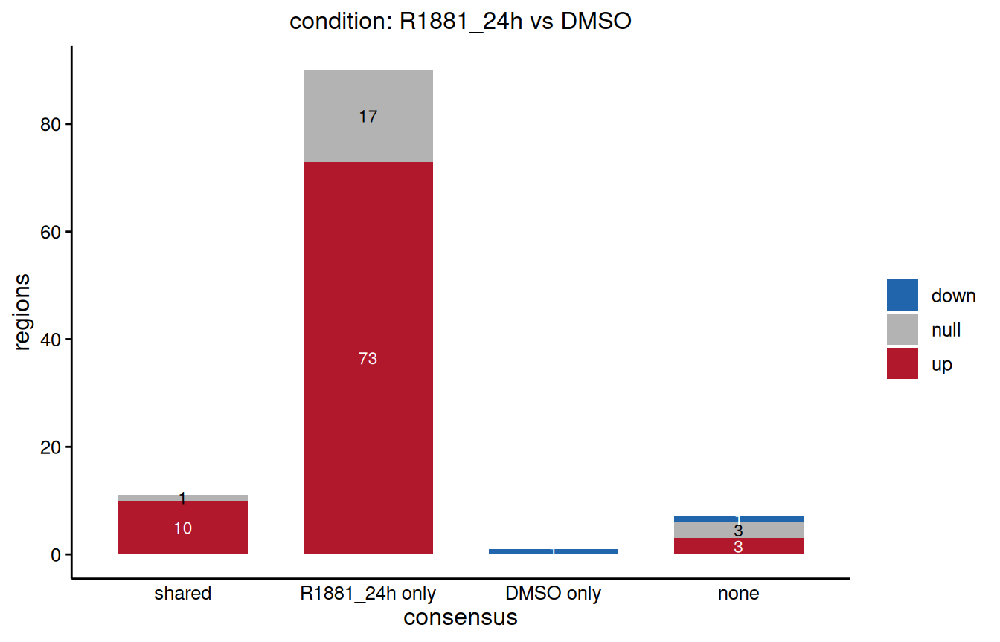
Three kinds of region show up here. Those called in both groups and still changing are sites that were already bound and got more receptor. Those called only after treatment and significant are new sites, the ones the experiment is about. Those called in one group but not changing are the interesting residue: either the caller was near its threshold in the other group, or the difference is real but below the power available in the window. Peak calling is a threshold on a continuum, and a region that fails it is not a region with no signal.
The reverse case deserves its own look. A region called in both conditions and significantly different is invisible to any analysis that works from the peak lists alone, which is the argument for counting rather than intersecting.
Writing the results out
exportResults(results,
path = "results",
onlyChanging = TRUE,
splitByDirection = TRUE)One table and one BED file per contrast, the BED coloured by direction so it can be dropped into a genome browser as it is, and a record of every parameter the analysis ran with.
Whole regions, tiles or summits
The analysis above counts every consensus region whole. That is the classic choice and the right one for this dataset, but it is not the only way to turn a set of peaks into rows of a count matrix, and the other two are worth knowing about.
Whole regions
One row per region, one number per sample. The test asks whether the region as a whole gained or lost signal. This suits transcription factors and ATAC-seq, whose peaks are a few hundred base pairs wide and change as a block, and DiffBind did it this way before version 3.0. Its weak point is the width of the regions: a consensus merges overlapping peaks, so the regions come out uneven, from 242 bp to 1.3 kb in this dataset, and a wide region collects more background around the same site than a narrow one.
Tiles
tileWidth cuts every region into tiles of that width,
and each tile becomes a row of its own. The code of this part is shown,
not run.
tiledCounts <- countReads(consensus,
sampleSheet = sampleSheet,
tileWidth = 200)From there the steps are the usual ones, background, normalisation
and fit, and testRegions() recognises the tiled object.
Every tile is tested on its own and the p-values are then combined back
into one per region, so the results keep one row per region and the
region stays the unit of inference.
tiledCounts <- countBackground(tiledCounts, binSize = 10000)
tiledCounts <- normalizeCounts(tiledCounts, method = "background")
tiledFit <- fitRegions(tiledCounts, design = ~ condition, engine = "edgeR")
tiledResults <- testRegions(tiledFit,
contrast = c("condition", "R1881_24h", "DMSO"),
combineMethod = "simes")
resultsTable(tiledResults) # one row per region
tileTable(tiledResults) # one row per tileTiles are worth it when the shape of a region matters and not only its total:
- Broad domains. H3K27me3, H3K36me3 or H3K9me3 cover tens of kilobases, and a change can be confined to one end. Counted whole, a domain that gains signal on one flank and loses it on the other can come out flat.
- Partial changes. A super-enhancer where one constituent gains binding, or a promoter where the signal moves downstream into the gene body.
- Regions of very different width. Tiles give every row the same width, so a 20 kb domain and a 500 bp peak are tested on the same scale.
How the tiles of a region are put together is a choice about the
question. combineMethod = "simes", the default, asks
whether any part of the region changed, and one strong tile is enough.
"holm-min" asks several tiles to change together, three or
40 % of the region, whichever is more, which suits broad domains where a
single tile moving on its own is more often noise than biology. The
results table then reports n.tiles, and
n.tiles.up and n.tiles.down, the tiles
changing significantly in each direction within the region. The
log2FC of a tiled region is the one of the tile carrying
the p-value, not an average, since that is the quantity the p-value is
about. mean.tile.log2FC gives the average over the tiles of
the region, weighted by their width, for when the region as a whole is
what is being described.
For a transcription factor like AR, tiles add rows without adding information: a peak of 400 bp cut into 200 bp tiles gives two tiles that nearly always move together, and a test with more rows and the same answer.
Recentring on the summits
The other answer to uneven widths goes the opposite way: instead of
cutting the regions, rebuild them at a fixed width around the summit of
the signal. This is what DiffBind has done by default since
version 3.0, with windows of 401 bp, and summits in
countReads() does the same: every region becomes a window
of 2 * summits + 1 bp centred on its summit.
summitCounts <- countReads(consensus,
sampleSheet = sampleSheet,
summits = 200,
verbose = FALSE)
head(SummarizedExperiment::rowRanges(summitCounts)[, c("region.id", "summit")], 3)
> GRanges object with 3 ranges and 2 metadata columns:
> seqnames ranges strand |
> <Rle> <IRanges> <Rle> |
> consensus|19:46089709-46090037 19 46089703-46090103 * |
> consensus|19:46182368-46182658 19 46182400-46182800 * |
> consensus|19:46300807-46301375 19 46300862-46301262 * |
> region.id summit
> <character> <integer>
> consensus|19:46089709-46090037 19:46089709-46090037 46089903
> consensus|19:46182368-46182658 19:46182368-46182658 46182600
> consensus|19:46300807-46301375 19:46300807-46301375 46301062
> -------
> seqinfo: 1 sequence from an unspecified genome; no seqlengths
table(BiocGenerics::width(SummarizedExperiment::rowRanges(summitCounts)))
>
> 401
> 109The summit is found in the reads, as DiffBind finds it: the
highest point of the fragment pileup of each sample, averaged over the
samples with weights proportional to the height of their pileup over
their depth, so that the samples carrying the signal decide where it
sits. A region with no fragment keeps its midpoint.
region.id still holds the coordinates of the consensus
region each window came from, and summit where it was
centred. The inputs are counted over the same windows.
summitSource = "peaks" takes the summits the peak caller
wrote in the tenth column of the narrowPeak files instead, averaged over
the peaks overlapping the region with weights proportional to their
significance. It needs no BAM file, and on this dataset the two place
the summits a median of 26 bp apart. summits = 0 locates
the summits and leaves the regions alone, which keeps the counts of
whole regions while letting plotProfile() align them on the
signal.
That puts every site on the same footing and centres the count on where the protein sits, which is what a transcription factor or ATAC-seq analysis usually wants. Widths between 200 and 500 bp suit most factors. It is wrong for broad marks, whose summit is an arbitrary point in a domain: collapsing the domain to a point throws away the thing being measured, and tiles are the tool there.
On this dataset the summits sit a median of 32 bp from the midpoints of the consensus regions, and 236 bp at most, and none of the windows overlap. The test comes out the same as on whole regions, 82 regions up and one down against DMSO, which is what one expects from a factor whose peaks are narrow and centred already; on a consensus of wide merged regions the two can differ more.
consensusRegions offers a recentring of its own,
recentre = TRUE, which loadConsensusPeaks()
passes through. It works inside each group, on the summit of the most
significant peak of every consensus region, before the groups are
pooled; when the summits of two groups sit a few base pairs apart their
windows overlap and are merged back, so the pooled regions are close to
the width asked for rather than equal to it, and the package says so
with a warning. summits in countReads() works
on the pooled regions and gives them all the same width.
Where to go next
The consensus built here is an ordinary region set, so everything in
the main vignette applies to it unchanged.
loadConsensusPeaks() takes a regionSets
argument that splits the consensus by overlap with an annotation, so the
peaks can be divided into promoters, enhancers and the rest at the
moment they are loaded. The set then becomes the unit of the test
through testRegionSets(), which asks whether a whole class
of elements moved instead of counting how many of its members passed a
threshold.
Session info
sessionInfo()
> R version 4.6.1 (2026-06-24)
> Platform: x86_64-pc-linux-gnu
> Running under: Ubuntu 24.04.5 LTS
>
> Matrix products: default
> BLAS: /usr/lib/x86_64-linux-gnu/openblas-pthread/libblas.so.3
> LAPACK: /usr/lib/x86_64-linux-gnu/openblas-pthread/libopenblasp-r0.3.26.so; LAPACK version 3.12.0
>
> locale:
> [1] LC_CTYPE=en_US.UTF-8 LC_NUMERIC=C
> [3] LC_TIME=en_US.UTF-8 LC_COLLATE=en_US.UTF-8
> [5] LC_MONETARY=en_US.UTF-8 LC_MESSAGES=en_US.UTF-8
> [7] LC_PAPER=en_US.UTF-8 LC_NAME=C
> [9] LC_ADDRESS=C LC_TELEPHONE=C
> [11] LC_MEASUREMENT=en_US.UTF-8 LC_IDENTIFICATION=C
>
> time zone: Europe/Amsterdam
> tzcode source: system (glibc)
>
> attached base packages:
> [1] stats4 stats graphics grDevices utils datasets methods
> [8] base
>
> other attached packages:
> [1] ggplot2_4.0.3 dplyr_1.2.1 RegionSetDE_0.99.0
> [4] GenomicRanges_1.64.0 Seqinfo_1.2.0 IRanges_2.46.0
> [7] S4Vectors_0.50.3 BiocGenerics_0.58.1 generics_0.1.4
> [10] BiocStyle_2.40.0
>
> loaded via a namespace (and not attached):
> [1] RColorBrewer_1.1-3 rstudioapi_0.19.0
> [3] jsonlite_2.0.0 shape_1.4.6.1
> [5] magrittr_2.0.5 magick_2.9.1
> [7] farver_2.1.2 rmarkdown_2.32
> [9] GlobalOptions_0.1.4 fs_2.1.0
> [11] BiocIO_1.22.0 ragg_1.5.2
> [13] vctrs_0.7.3 Cairo_1.7-0
> [15] Rsamtools_2.28.0 RCurl_1.98-1.20
> [17] htmltools_0.5.9 S4Arrays_1.12.0
> [19] curl_8.0.0 SparseArray_1.12.2
> [21] sass_0.4.10 consensusRegions_0.99.0
> [23] bslib_0.12.0 htmlwidgets_1.6.4
> [25] desc_1.4.3 cachem_1.1.0
> [27] GenomicAlignments_1.48.0 commonmark_2.0.0
> [29] lifecycle_1.0.5 iterators_1.0.14
> [31] pkgconfig_2.0.3 Matrix_1.7-6
> [33] R6_2.6.1 fastmap_1.2.0
> [35] MatrixGenerics_1.24.0 clue_0.3-68
> [37] digest_0.6.39 colorspace_2.1-3
> [39] textshaping_1.0.5 labeling_0.4.3
> [41] httr_1.4.9 abind_1.4-8
> [43] mgcv_1.9-4 compiler_4.6.1
> [45] withr_3.0.3 doParallel_1.0.17
> [47] csaw_1.46.0 S7_0.2.2
> [49] BiocParallel_1.46.0 DelayedArray_0.38.2
> [51] rjson_0.2.23 tools_4.6.1
> [53] otel_0.2.0 glue_1.8.1
> [55] restfulr_0.0.17 nlme_3.1-171
> [57] gridtext_0.1.6 grid_4.6.1
> [59] cluster_2.1.8.3 gtable_0.3.6
> [61] tidyr_1.3.2 metapod_1.20.0
> [63] xml2_1.6.0 XVector_0.52.0
> [65] ggrepel_0.9.8 foreach_1.5.2
> [67] pillar_1.11.1 markdown_2.0
> [69] stringr_1.6.0 limma_3.68.5
> [71] circlize_0.4.18 splines_4.6.1
> [73] ggtext_0.2.0 lattice_0.23-1
> [75] rtracklayer_1.72.0 tidyselect_1.2.1
> [77] ComplexHeatmap_2.28.0 locfit_1.5-9.12
> [79] Biostrings_2.80.2 knitr_1.52
> [81] bookdown_0.48 litedown_0.11
> [83] edgeR_4.10.5 SummarizedExperiment_1.42.0
> [85] xfun_0.61 Biobase_2.72.0
> [87] statmod_1.5.2 matrixStats_1.5.0
> [89] stringi_1.8.9 UCSC.utils_1.8.0
> [91] yaml_2.3.12 evaluate_1.0.5
> [93] codetools_0.2-20 cigarillo_1.2.1
> [95] tibble_3.3.1 BiocManager_1.30.27
> [97] cli_3.6.6 systemfonts_1.3.2
> [99] jquerylib_0.1.4 dichromat_2.0-1
> [101] Rcpp_1.1.2 GenomeInfoDb_1.48.0
> [103] png_0.1-9 XML_3.99-0.24
> [105] parallel_4.6.1 pkgdown_2.2.1
> [107] bitops_1.1-0 viridisLite_0.4.3
> [109] scales_1.4.0 purrr_1.2.2
> [111] crayon_1.5.3 GetoptLong_1.1.1
> [113] rlang_1.3.0